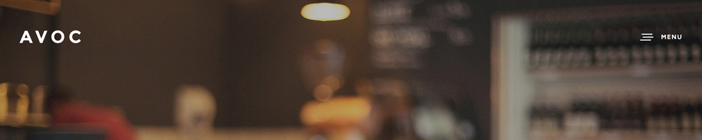
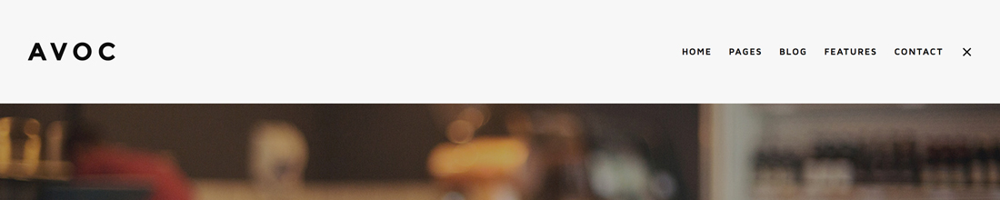
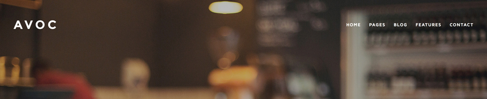
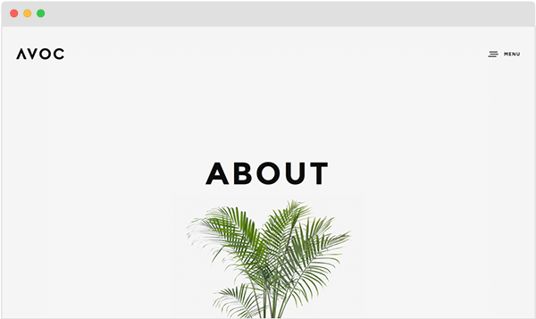
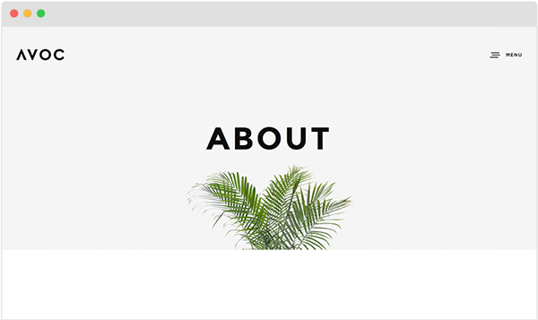
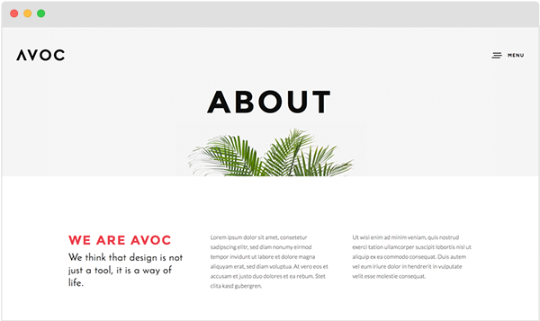
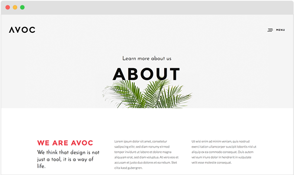

Avoc HTML Template Documentation
Thanks
First of all, a big thanks for purchasing this template. This document includes a guide and general information about the template.
Support
Please read the documentation before seeking support. If you have any questions that are beyond the scope of this document you can still contact me by using the contact form on the themeforest profil page. SpabRice. Please enter the name of the item you've bought in the textmessage.
Do not use the comment section on the themeforest item page. This will slow down the support process
Important: Theme support does not include any sort of customizations for you or your client.
Introduction
You bought an HTML / CSS template, so you need some basic knowledge for those 2 languages. The Best way is to play around with the different elements but you'll find some helpfull tips and explanations how this template is build up and works.
Please compare all the explanation from this documentation with the original files to have a better understanding.
General Css Elements
These are general classes, id's or tags which you will find frequently in almost all html files.
#page-content: you will find this element on every page. It contains all main content (header,page-body,footer)
#page-body: this element is also needed for all pages. It contains the main content
.wrapper: it wrapps the element to a the main content width. (1080px = default / 960px for smaller screens / 780px for tablet).
.wrapper-small: same use than .wrapper but with smaller sizes. (780px).
.wrapper-mini: another wrapper with a mini size. (400px).
.left-float: use this classname for any element you want to float to the left.
.right-float: use this classname for any element you want to float to the right.
.clearfix: for all elements which contains any floating element.
.align-center: use this class if you want to align the text for a whole section or just an element.
.text-light: this class is needed if you use a darker background for a section (for example a dark parallax section)
.colored: use this class for text elements you want to add the default color
HTML Structure
Here's the basic html structure.
... <body> <div id="page-content"> <header> </header> <section id="hero"> </section> <section id="page-body"> </section> <footer> </footer> </div> </body> ...
You're of course not forced to use all of the section (example: in the 404 page only header and hero is used). But if you do so, please use the structure like above with the right id's.
The #page-body has a top padding by default to separate it from the hero and not to be sticky to it. In some cases you may want to delete this margin, use the class nopadding. (see general-elements.html)
Fonts / Text
This tempalte uses 4 different fonts (with different weights) comming from the google font library.
- Montserrat for all main headings / titles
- Josefin Sans for all subtitles and other misc informations (copyright,blockquote,blog-date,etc.)
- Maven Pro for the menu and all links/buttons linked to some "action" (pagination,open filter,etc.)
- Lato for the text paragraphs
Include the fonts in every html you use/create. Make sure to include them in the head before the css files.
<!-- FONTS --> <link href="http://fonts.googleapis.com/css?family=Montserrat:400,700" ...> <link href="http://fonts.googleapis.com/css?family=Maven+Pro:400,700,900" ...> <link href="http://fonts.googleapis.com/css?family=Lato:300,400,700,900" ...> <link href="http://fonts.googleapis.com/css?family=Josefin+Sans:400,700" ...> <!-- FONTS -->
When using one of the fonts in the css always add the weight you want to use.
h1 {
font-family: 'Montserrat';
font-weight: 400;
...
}
h1 strong {
font-weight: 700;
}
Headings (Titles)
By default the headings (h1,h2,h3,h4,h5,h6) Uses the main heading font "Montserrat" and all letters are uppercase.
By adding the class alttitle the title will show the font Josefin Sans.
<h3 class="alttitle ">Your Title</h3>
Changing fonts
To change a font choose another Webfont from the Google Font library or use other sources.
You have to go through the syle.css and change all selectors where I assigned the font.
Tip: use the search/replace function (Mac = cmd+f / Win = ctrl+f) which almost every editor got.
Preloader / Pageloader
You will find the html markup of the page loader in all html pages (except 404 page). This will hide the content with a white loading screen until the page is loaded. The black top loading bar is comming from the pace script. (see below)
<!-- PAGELOADER --> <div id="page-loader"> <div class="page-loader-inner"> <div class="loader"><strong>Loading</strong></div> </div> </div> <!-- PAGELOADER -->
The loader bar is done by the pace script/plugin. So make sure to have this script included if you want to show the loader.
<script type='text/javascript' src='files/js/jquery.pace.js'></script>
Disabling Pageloader
You can of course disable the page loader as done in the 404 page. To do so, just delete the pageloader html markup from the code and delete the script includer of the pace script.
Header
See the default markup for the header below.
<!-- HEADER -->
<header id="header">
<div class="header-inner clearfix">
<div id="logo" class="left-float">
<a id="dark-logo" class="logotype" href="index.html">
<img src="files/uploads/logo-avoc-dark.png" alt="Logo"></a>
<a id="light-logo" class="logotype" href="index.html">
<img src="files/uploads/logo-avoc-light.png" alt="Logo"></a>
</div>
<div class="menu right-float clearfix">
<a href="#" class="open-nav"><span class="hamburger"></span><span class="text">Menu</span></a>
<nav id="main-nav">
...
</nav>
</div>
</div>
</header>
<!-- HEADER -->
See Logo for more information about the logo.
See Menu for more information about the menu.
Header Options
By default the header will have an hamburger icon which needs to be clicked to open the menu.

After clicking the Menu button the menu will open on a white background. 
This is the default behavior of the menu / header. If you would like to have the menu items visible on page load, just add the class header-open to the header tag.
<header id="header" class="header-open">
Another option is the transparent header. As I mentioned above, when the menu items are shown, the header has a white background.
By adding the class header-transparent the header will stay transparent.
<header id="header" class="header-transparent">

Disabling fixed / sticky
The header will have a fixed position by default. Which means that although the visitor is scrolling, it will always be visible on top of the page.
Add non-fixed to the class and the header will have a static position.
<header id="header" class="non-fixed">
Logo
...
<div id="logo" class="left-float">
<a id="dark-logo" class="logotype" href="index.html">
<img src="files/uploads/avoc-logo-light.png" alt="Logo"></a>
<a id="light-logo" class="logotype" href="index.html">
<img src="files/uploads/avoc-logo.png" alt="Logo"></a>
</div>
...
Always use/place 2 logos (dark-logo + light-logo) with the same pixel dimensions. The light logo will be shown if your hero background is dark.
If this is case, use the class show-light-logo. This will show the light logo on page load.
<div id="logo" class="left-float show-light-logo">
As done in pages index-agency.html,services.html,...
Change the css
Attention: Depending on your logo height you need to adapt the style.css. Open the style.css and scroll to the bottom. Adapt the values depending on your logo height.
For example, the logo I've used has a height of 30px.
/* your logo height */
header #logo { height: 30px; }
.open-nav { height: 30px; }
.open-nav .text { line-height: 30px; }
nav#main-nav ul li > a { line-height: 30px; }
/* logo height + header-inner margin (30px + 2*60px) */
#page-body { padding-top: 150px; }
header:after { top: -150px; height: 150px; }
header.header-open:not(.header-transparent) + #hero, header.header-open:not(.header-transparent) + #page-body { margin-top: 150px; }
#header-filter, #header-share { top: -150px; min-height: 150px; }
@media only screen and (max-width: 1024px) { nav#main-nav { top: 150px !important; } }
Making the logo retina ready
To make your logo (any kind of image) ready for retina devices you just need to have 2 image files for each logo (image)
- One with the normal size (ex. 130px * 30px)
- and the second with the doubled size (ex. 260px * 60px)
Now you just need to tell the html that it should include the doubled size for retina devices by using the srcset attribute.
<img src="logo.png" srcset="logo.png 1x, logo@2x.png 2x">
Please have also a look at the world wide web for more information about the srcset attribute.
Hero / Page Title
The hero section is the first content of your page placed between the header and the page-body section in the html markup.
It usually contains the page title of the page, but can also hold a slider or some other content
... </header> <section id="hero"> <div class="page-title"> ... </div> </section> <section id="page-body"> ...
The page-title element is used for all pages which doesn't use a fullwidth slider on first element.
See Slider to see how to include the slider
See Parallax Background to see how to add a parallax background to the hero section.
See Videos to see how to add a background video to the hero section.
The page-title section can contain any type of content but usually there is one or multiple "heading" included.
... <section id="hero" class="hero-big"> <div class="page-title"> <h1><strong>About</strong></h1> </div> </section> ...
Hero Size
Add the class hero-full and it will cover 100% of the window height
<section id="hero" class="hero-full">
Add the class hero-big and it will cover 80% of the window height
<section id="hero" class="hero-big">
Add the class hero-half and it will cover 50% of the window height
<section id="hero" class="hero-half">
Add the class hero-auto and the section will automatically adapt to its content
<section id="hero" class="hero-auto">
For hero-full,hero-big and hero-half the page-title has an absolute positioning. This means if your content is taller than the height of your hero section the content is cutted and not 100% visible. So make sure not to use too much content, this could lead to some issues especially in small devices.
For hero-auto all is fine, and you can add as much content as you want because it adapts to its content.
Page title position
As mentioned above, the title positioning has only impact if you choose hero-full,hero-big or hero-half.
By default the positioning of the page title is centered but you can change the position by adding some classes to the page title element. (as done in the blog-single-1.html for example)
- hleft / hright: this will change the horizontal position to left or right
- vtop / vbottom: this will change the vertical position to top or bottom
Slider
This template uses the owl carousel script for all sliders, so make sure to have inlcuded the javascript and css file of the owl script in the pages where you want to have a slider.
Here's the default markup for a slider.
<div class="owl-slider"> <div><img src="files/uploads/image-1.jpg" /></div> <div><img src="files/uploads/image-2.jpg" /></div> </div>
You will find the script initialiser in the script.js at line +-130.
jQuery(".owl-slider").owlCarousel({
items:1,
stopOnHover : true,
nav: true,
navText:false,
dots: false,
smartSpeed : 800,
singleItem : true,
autoHeight : true,
loop: false,
autoplay: false,
navRewind: false
});
Hero Slider
If you want to place a slider in the hero section it needs a slightly different markup in order to make it full width. (see index.html for example)
<section id="hero" class="hero-big">
<div class="owl-slider hero-slider" data-autoplay="true">
<div class="slider-item" style="background-image:url(files/uploads/slider-image.jpg);">
<div class="owl-slider-caption">
<h1><strong>Kaffe & Co</strong></h1>
<h5 class="alttitle">Branding</h5>
</div>
</div>
...
</div> <!-- END .owl-slider -->
</section>
Instead of adding an <img sr="..."> tag add the image as background image in order to automatically adapt.
Switching logo / menu color
Add the class text-light the the slider-items you want a light text color. Thanks to this the logo and menu will also change appearence.
<div class="slider-item text-light" style="background-image:url(slider-image.jpg);">
<div class="owl-slider-caption">
<h1><strong>Still Life</strong></h1>
<h5 class="alttitle">Photgraphy</h5>
</div>
</div>
Slider captions
Additionally you can add caption for the hero slider by just adding the owl-slider-caption element. By default it has a center positionbut as same as the page-title you can change the positioning by using the classes hlef / hright and vtop / vbottom
<div class="owl-slider-caption hleft vbottom"> <h1><strong>Kaffe & Co</strong></h1> <h5 class="alttitle">Branding</h5> </div>
Portfolio
The portfolio in the key element of this template. It uses the awsome wolf parallax script (index.html) and the isotope script (index-masonry.html) for a masonry layout.
Wolf Parallax
I really recommend to have a look at the wolf documentation to have detailed information how this script works.
All I added to the default appearence of the script is the hover effect of the portfolio items (style.css at line +-1050) and the caption styling (index-creative.html).
In the index-creative.html you will see that I used inline css to style the captions appearence.
<div class="wolf-caption portfolio-caption"> <a href="#" class="wolf-caption-link" style="background: #aa88b6; padding: 20px;"> <h6 class="alttitle portfolio-category" style="color: #fff;">Photography</h6> <h4 class="portfolio-name" style="color: #fff;"><strong>The Efimer</strong></h4> </div> </a>
Personally I'm not a friend of inline css, and I always recommend to put css in some css file, but in this case it might be easier to do so, otherwhise you would need to add a class for each caption element.
As mentioned above, for all other information about the script please have a look at the wolf documentation.
Isotope (masonry)
The isotope script is used for the masonry layout used for Portfolio and Blog layout. Create as much items as you wants, here's the default markup.
<div id="GRID-ID" class="masonry clearfix" data-maxitemwidth="600"> <div class="masonry-item branding"> ... </div> <!-- END .masonry-item --> ... </div> <!-- END #GRID-ID -->
Details
- #GRID-ID -> you can customize this name, make sure to use the same name in the filter option if used (see below).
- .data-maxitemwidth -> This handles the itemwidth. as higher the value as bigger the thumbnails. This also depends on the screen size. If you use for example '600' make sure that your images has also this width because in some cases the tiles could have this width size.
- .branding -> This is the name for the filter attribute
The Masonry will automatically adapt to the width of the parent container.
For more options please take a look at the index-masonry.html
Filter
The filter is placed in the header but you could also place it in some other area. It is part of the wolf parallax or isotope script dependingly which one you're using.
If you're using the header filter place the button to open the filter just below the nav element
... </nav> <a href="" class="open-filter" data-related-grid="portfolio-grid">Filter</a> ...
Now put the header-filter into the header-inner element. The html for both (wolf + isotope) is the same with one exception: the classname of the ul. use wolf-filter or masonry-filter dependingly which one you're using.
<div id="header-filter">
<div class="filter-inner align-center">
<a href="" class="close-filter">Close</a>
<h5 class="title-filter"><strong>Filter</strong></h5>
<ul id="portfolio-filter" class="filter wolf-filter clearfix" data-related-grid="portfolio-grid">
<li><a class="active" href="#" data-filter-value="*">All</a>
<li><a data-filter-value=".branding" href="#" title="Branding">Branding</a>
<li><a data-filter-value=".print" href="#" title="Print">Print</a>
<li><a data-filter-value=".photography" href="#" title="Print">Photography</a>
</ul>
</div>
</div>
</div> <!-- END .header-inner --<
All filter anchors needs a data-option-value attribute with the correct filter name (example: .branding)
It's important that the value of data-related-grid is the same than the id name of the grid.
Blog
The blog layout is also done with the isotope script.
Horizontal Section
A horizontalsection is a fullwidth section which have some sort of background (color,image,video,etc.) to seperate some specific content from default content. (see index-agency.html)
A horizontal section MUST NOT be placed into a wrapper element in order to take the full width!
<div class="horizontalsection"> <div class="horizontalinner wrapper"> ... </div> </div>
Use the markup above. You see that the horizontalsection element is always followed by a horizontalinner. This is important. The horizontalsection has nor margin-top or margin-bottom because you could make use of another horizontalsection just below another and a margin wouldn't look good. If you want a spacing between section, use a spacer element.
Parallax Backgrounds
You could add a parallax image to every element but usually it's used for the Hero Section or an Horizontal Section element.
(see index-agency.html)
Add the classname "parallax-section" (and optionally 'text-light' if you use a dark background), the "data-parallax-image".
<div class="horizontalsection text-light parallax-section" data-parallax-image="files/uploads/parallaxbg.jpg">
For the hero section it would be added to the #hero element
<section id="hero" class="hero-big parallax-section" data-parallax-image="files/uploads/hero-about.jpg">
Videos
You have 4 possibilities to add videos to your pages.
- Classic integration by iframe code
- Inline video with image placeholder
- Lightbox video open with an anchor tag
- Background videos for hero section or horizontal fullwidth sections
Classic integration
Just go to your video site (youtube, vimeo or others) and search for the embedding iframe code and just put it on your page where you want.
Example for a youtube video.
<iframe width="560" height="315" src="https://www.youtube.com/embed/9dgSa4wmMzk" frameborder="0" allowfullscreen>
For responsive reasons, make sure to include the javascript jquery.fitvids.min.js. This will automatically adapt the video (iframe) to it parent container.
Inline video
An inline video will first show a placeholder image with a play button, and when this button is clicked it will load and play the video. (see general-elements.html)
Inline videos are only possible for youtube + vimeo videos. The video will automatically adapt to the size of the inline-element so you might have black border on the top/bottom or left/right
Add a new div element with class inline-video and add the different data options.
<div class="inline-video" data-type="youtube" data-videoid="9dgSa4wmMzk" data-button="Youtube Video"> <img src="files/uploads/video-placeholder.jpg" alt="SEO NAME"> </div>
- data-type: youtube or vimeo
- data-videoid: add the id of the youtube or vimeo video
- data-button (optional): optionally add a text which will added to the button
Lightbox Video
If using a lighbox video make sure to inlcude the javascript jquery.lightcase.min.js script and related css.
Add an anchor tag with the data-rel attribute lightcase
<a href="http://www.youtube.com/embed/9dgSa4wmMzk" data-rel="lightcase">Youtube Video</a> <a href="http://player.vimeo.com/video/110894499" data-rel="lightcase">Vimeo Video</a> <a href="files/uploads/video.mp4" data-rel="lightcase">Slefhosted Video</a>
For youtube + vimeo videos you MUST use the embed link.
Youtube: http://www.youtube.com/embed/YOUTUBE-ID
Vimeo: http://player.vimeo.com/video/VIMEO-ID
You may adapt the width / height values on the script initialiser atline +- 210 in the script.js
Background Video
In fact you can add a background video to every kind of element but I usually do it in the Hero Section or an Horizontal Section element.
(see index-agency.html)
Make sure to provide your video in 3 different formats:
- mp4
- webm
- ogg
Add the classname "videobg-section" (and optionally 'text-light' if you use a dark video) to the element, and fill in the different "data-" options.
<div class="horizontalsection text-light videobg-section" data-videofile="files/uploads/coffee" data-videowidth="1280" data-videoheight="720" data-videoposter="files/uploads/poster-image.jpg" data-videoparallax="false" data-videooverlaycolor="#000000" data-videooverlayopacity="0.5" data-sound="true">
- data-videofile -> please add the path to your files without the file ending (ie: .mp4)
- data-videowidth + data-videoheight -> very important that you enter the right values
- data-videoposter -> this poster is shown for devices which don't support background videos
- data-videoparallax -> true or false for a parallax effect
- data-videooverlaycolor -> optional overlay color / leave empty if not wanted
- data-videooverlayopacity -> opacity value for the overlay
- data-sound -> if true, the video also plays the sound with option to mute it manually
Note: If you're uploading your site to a server and the video is not showing in some browsers, this is server related. Make sure to enable the MIME types. You can enable them via your xerver settings or via htaccess.
Note: Mobile devices like Tablets or Smartphones doesn't support background videos. In this case the poster image will be displayed. Background videos are only possible with selfhosted videos.
Contact Form
Create a new form with all the attributes like below
<form id="contact-form" class="checkform" action="" target="contact-send.php" method="post" >
You must at least add 3 form-rows with the name, email + message. These 3 fields are required for the sending. Take a look at the markup on the contact section of the index.html
You can add more fields if wanted.
Please add the classname req to the label if this field is required.
<div class="form-row clearfix"> <label for="customfield" class="req">Message *</label> <input type="text" name="customfield" class="customfield" id="customfield" value="" placeholder="Custom Field *" /> </div>
When adding a new field you also need to add these fieldnames in the hidden field fields seperated and ending by a ",".
Change also the email and the Subject Name.
<input type="hidden" name="subject" value="Contact Subject Avoc html" /> <input type="hidden" name="fields" value="name,email,message,customfield," /> <input type="hidden" name="sendto" value="YOUREMAIL@SERVER.com" />
Please add an form-note message at the wanted position. This message will be displayed if there are any errors/success.
<div id="form-note"> <div class="alert alert-error"> <h6><strong>ERROR</strong>: Please check your entries!</h6> </div> </div>
Note: If you have good php knowledge you can take a look at the contact-send.php and change it if you want.
Google Map
Search first for your longitude and latitude on itouchmap.com.
Once you got them use this script to add your google map.
The map will always take the full width of the parent container. You just need to set up the height vie inline css.
<div id="map" class="header-map" style="height:400px;"></div>
<script type="text/javascript" src="http://maps.google.com/maps/api/js?sensor=false"></script>
<script type="text/javascript">
function mapinitialize() {
var latlng = new google.maps.LatLng(-33.86938,151.204834);
var myOptions = {
zoom: 14,
center: latlng
scrollwheel: true,
scaleControl: false,
disableDefaultUI: false,
mapTypeId: google.maps.MapTypeId.ROADMAP
};
var map = new google.maps.Map(document.getElementById("map"),myOptions);
var image = "files/uploads/map-pin.png";
var marker = new google.maps.Marker({
map: map,
icon: image,
position: map.getCenter()
});
var contentString = '<b>Office</b><br>Streetname 13<br>50000 Sydney';
var infowindow = new google.maps.InfoWindow({
content: contentString
});
google.maps.event.addListener(marker, 'click', function() {
infowindow.open(map,marker);
});
}
mapinitialize();
</script>
Change the map-pin image if you want and the Text for the infobox.
Elements / Shortcodes
Spacer
If you already took a look at the html files you probably met some "spacer" elements. These elements have been created to give you control over some spacings.
For example I used them to add a spacing at the bottom of the last section of the page.
Just add a div with the classname spacer + the height of the spacer
<div class="spacer spacer-big"></div>
- spacer-big = 160px
- spacer-medium = 120px
- spacer-small = 40px
- spacer-mini = 20px
Icons
This template uses the icon family Ionicons and Font Awesome. You can place the icons just anywhere with the <i> tag.
Ionicons
<i class="ion ion-ios-pulse ion-4x"></i>
Full icon list for ionic icons
http://ionicons.com/
Font Awesome
<i class="fa fa-check-square-o fa-3x"> </i>
Please take a look here to have a full list of the available icons
http://fontawesome.io/icons/
Gallery
Besides the isotope script there is a simple gallery element which you can use. (see portfolio-single-2.html)
<ul class="gallery gallery-col3 spaced"> <li><img src="image-1.jpg" /></li> <li><img src="image-2.jpg" /></li> <li><img src="image-2.jpg" /></li> </ul>
Choose between gallery-col2, gallery-col3, gallery-col4, gallery-col5 and gallery-col6 for the numbers of images shown per row.
Add the class spaced if you want a spacing/margin between the images
Animations
In general you can animate each elemnt. Just add the class has-animation to your element. This element will be hidden on start and as soon as it gets visible it gets animated.
<div class="column-section clearfix"> <div class="column one-third has-animation"> ... </div> <div class="column one-third has-animation" data-delay="200"> ... </div> <div class="column one-third last-col has-animation" data-delay="400"> ... </div> </div>
Optionally you also can add a delay.
Buttons
There are 3 predefined buttons for this tempalte
- sr-button1: black background and colored background on hover
- sr-button2: colored background and black background on hover
- sr-button3: white background and colored background on hover
- sr-button4: colored background and white background on hover
<a class="sr-button sr-button2 medium-button" href="#" >Button Example</a>
Choose also between 4 different sizes (mini-button,small-button,medium-button,big-button)
Css Files
You should find the following css files
- style.css -> main style !important
- font-awesome.min.css -> css for fontawsome icons !important
- ionicons.css -> css for Ionicons icons !important
- mqueries.css -> css rules for being responsive !important
- lightcase.css -> style for lightcase
- isotope.css -> style for isotope animations (portfolio filter)
- owl.carousel.css -> owlcarousel css
- wolf.css -> style wolf parallax script
All css files with !important must be included in all html files.
The other files are only needed if you use the appropriate jquery script in the file.
Example:
The isotope.css from the isotpe plugin is only included in the index-masonry.html & blog.html because that's the only files which use the plugin.
Note:The mqueries.css must always be the last css file!
Customize css
I recommend to create a custom css file to add all your customizations, or use the bottom of the style.css. You should find a CUSTOM Section. If there is an update of the template you can easily copy your customization to the updated style.css.
/*---------------------------------------------- 16. CUSTOM STYLE ------------------------------------------------*/ /*YOUR CUSTOM CSS*/
Javascript
You should find the following js files
- jquery-2.1.4.min.js -> jquery library !important
- script.js -> initiaise all different scripts !important
- jquery.easing.compatibility.js -> easing compatibility !important
- jquery.easing.1.3.js -> easing script !important
- jquery.visible.min.js -> visible script !important
- tweenMax.js -> tweenMax for smooth animations !important
- jquery.pace.js -> prelaoder script
- jquery.wolf.min.js -> lightbox script
- jquery.isotope.min.js -> masonry script
- jquery.owl.carousel.min.js -> owlcarousel script
- jquery.backgroundparallax.min.js -> image parallax background script
- jquery.bgvideo.min.js -> background video script
- jquery.lightcase.min.js -> lightbox script
- jquery.fitvids.min.js -> size up/down all videos to parent container
- form-validation.min.js -> checks + sends the contact form
All js files with !important must be included in all html files.
Please include the other script only when needed. This will increase the page speed.
Note:
The script.js & the must always be the last js file! This is also the file you can edit if needed.
Note:
All scripts are included at the bottom of the html before closing the body tag.
Ressources
- latest jquery version: jQuery from John Resig
http://jquery.com/ - jquery.isotope.min.js: Isotope from David DeSandro
http://isotope.metafizzy.co/ - jquery.easing.1.3.js: Easing from George Smith
http://gsgd.co.uk/sandbox/jquery.easIng.php - jquery.owlcarousel.min.js: Owlcarousel from Bartosz Wojciechowski
http://owlgraphic.com/owlcarousel/index.html - jquery.fitvids.min.js: Video Fits
http://fitvidsjs.com/ - jquery.visible.min.js: Check the visibility
https://github.com/teamdf/jquery-visible/ - tweenMax.js: animation script from Greensock
http://greensock.com/tweenmax - jquery.lightcase.min.js: lightbox script from Cornel Bopp Art
http://cornel.bopp-art.com/lightcase/ - jquery.pace.js: preloader script from HubSpot
http://github.hubspot.com/pace/docs/welcome/ - jquery.visible.min.js: visible by CustomD
https://github.com/customd/jquery-visible
All other scripts are done by SpabRice and are only allowed to use within this template.